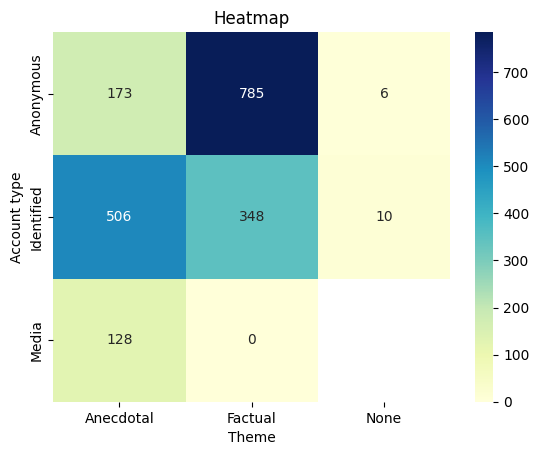

Question 5:
How does the number of likes differ between different themes and account types?
For this question, we used a heat map to find the correlation on the number of likes between the type of account and the theme of their Tweets about ivermectin. We first mapped the numerical values of the column "Theme" in back to its text values then counted the number of tweets for each paired category. We then created a pivot table with the count of data for each combination of type of account and the theme of their tweets.
import pandas as pd
import seaborn as sns
theme_map = {0: "Anecdotal", 1: "Factual", 2: "None"}
# Add the values of another column to the 'number of likes' column
df['likes_with_another'] = df['Likes'] + df['Replies'] + df['Retweets']
# Group the data by 'Account Type' and 'Theme' and calculate the sum of the combined likes
grouped = df.groupby(['Account type', 'Theme'])['likes_with_another'].sum().reset_index(name='sum_likes')
# Map the numeric values in the 'Theme' column to words using the theme_map dictionary
grouped['Theme'] = grouped['Theme'].map(theme_map)
# Create a pivot table with the sum of combined likes for each combination of 'Account Type' and 'Theme'
pivot_table = pd.pivot_table(grouped, values='sum_likes', index='Account type', columns='Theme')
# Plot the pivot table as a heatmap
hx = sns.heatmap(pivot_table, cmap='YlGnBu', annot=True, fmt='g')
hx.set_title('Heatmap')
By plotting the pivot table as a heat map, the results are shown below:
